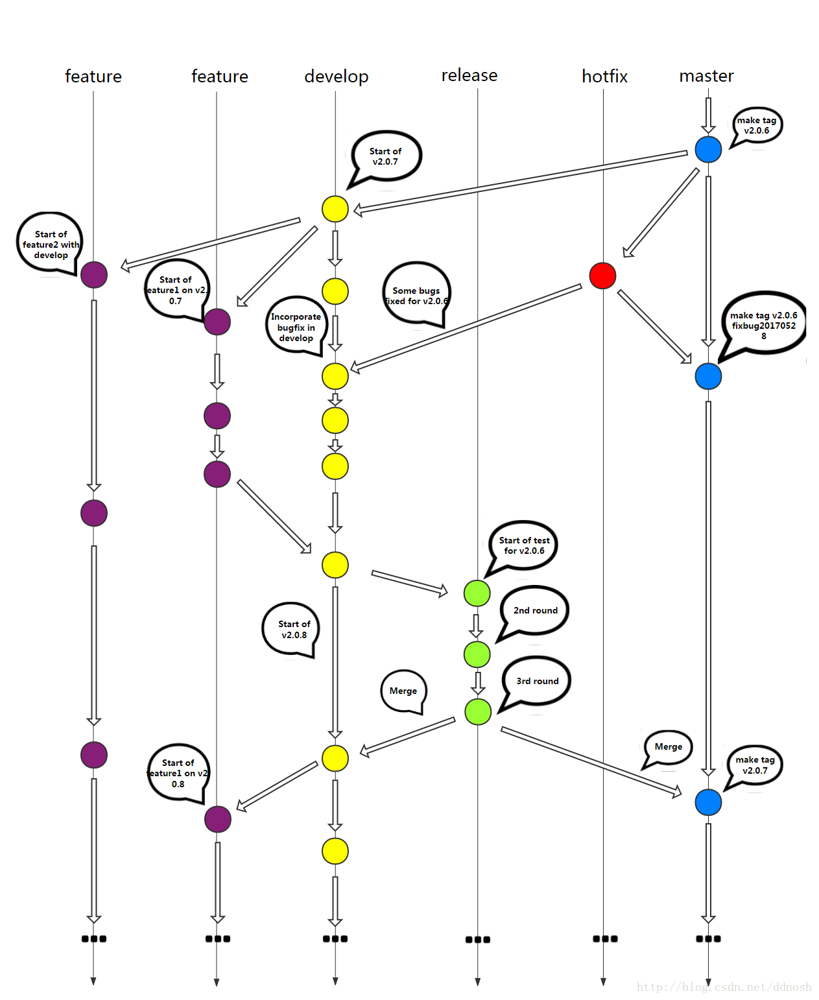

摘要：Git 是一款主流分布式版本管理系统，Github 是提供 Git 服务的一个主流网站，Github Desktop 是其客户端。
应用：微信查 ip 上传到 SAE，本地和云应用同步，检出、导入、导出。免费送200云豆，每天12颗。
1、curl模拟访问获取html页面
2、解析html页面,用正则表达式将表格转换成数组;
3、bootstrap 页面布局
版本控制的主要功能有备份、回滚、分支管理。
# 在 Master 分支上创建并切换到 dev 分支
git branch dev master
# 切换到 master 分支
git checkout master
# 在 Master 分支上创建并切换到 dev 分支
git checkout -b dev master
# 合并 dev 到当前分支
# --no-ff 参数表示不执行快进式合并，不在当前分支留有 dev 的演进过程
git merge --no-ff dev
# 删除分支
git branch -d fixbug-0.1
当不小心向远程仓库比如github做了一次错误的提交，想使本地和仓库回到某一个历史版本
1. 在 GitHub Desktop 中根据 History->右键->Copy SHA 复制
2. GitHub 网站
3. Git Bash 命令行
1. 在本地仓库文件夹右键-> Git Bash Here
2. Git Bash 客户端通过 cd 命令
3. 在 GitHub Desktop 中 `Ctrl + \` ` 在命令提示符中
# 回退所有内容到上一个版本，省略文件名表示回退所有
git reset HEAD^ `文件名`
# 向前回退到第3个版本
git reset –soft HEAD~3
# 将本地的状态回退到和远程的一样
# 这里origin是项目持有者的别称
git reset --hard origin/master(easy way)
git rebase FETCH_HEAD
# 回退到某个版本
git reset --hard `版本号`
# 模式：git reset --<mode> [<commit>]
# mode：
# --soft 退到某个版本，只回退了 commit 的信息，不会恢复到 index file 一级。如果还要提交，直接commit即可
# --mixed 此为默认方式，回退到某个版本，只保留源码，回退 commit 和 index 信息
# --hard 彻底回退到某个版本，本地的源码也会变为上一个版本的内容
git push --force
| 分支 | 命名 | 创建自 | 合并入 | 功能 | |
|---|---|---|---|---|---|
| 常设 | 主分支 | master | / | / | 用于正式发布，是稳定可用的版本，发布后需打上 tag |
| 常设 | 开发分支 | develop | master | master | 用于日常开发，是功能最新的分支。 |
| 常设 | 功能分支 | feature | develop | / | ==定制版、OEM版，==开发周期长，一般与develop分支处于并行关系 |
| 临时 | 功能分支 | feature/weixin_recharge 按照功能点（而不是需求）命名 | develop | 本地仓库的develop | 新功能，==预发布成功后== 删除此分支 |
| 临时 | 修补分支 | master | master & develop | 生产环境紧急bug修复 | |
| 临时 | 预发布分支 | release/#1.2 | develop | master & develop | 待发布版本的提测及修复 bug，提交到 master 时需打 tag |
release 分支 merge 到 master 分支后，需要打 tag，以便将来引用这个版本
临时分支使用完应删除

使用迅雷下载 https://desktop.github.com/ 会快点
项目最好存储在纯英文路径下
一般在某一文件夹，如使用 IDE 创建项目文件夹之后，将此项目文件夹创建为 Git 项目。
此时项目中应有 /.git 文件夹，表示这是一个 git 项目，操作是将其添加入本地仓库。
fork 指将别人的项目拷贝到自己的账户中。
clone 指将在 Github 网站上的项目克隆到本地计算机的仓库中，默认是自己的项目，可以通过 URL 克隆其他用户的项目。
克隆时本地文件夹可重命名。
默认只是将项目移出本地仓库，勾选之后才删除项目到回收站。
将本地项目移动到其它路径下
undo ##### 2. 已 push 到远程仓库
History->右键->Reserve this commit
commit to master
push
使用git时出现：warning: LF will be replaced by CRLF
代理错误：Git push时报错：Failed connect to github.com:443; No error和The remote end hung up unexpectedly
git config --global http.proxy "localhost:1080"
git config --global https.proxy "localhost:1080"